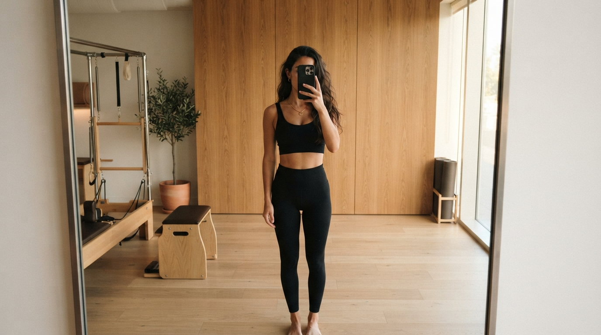
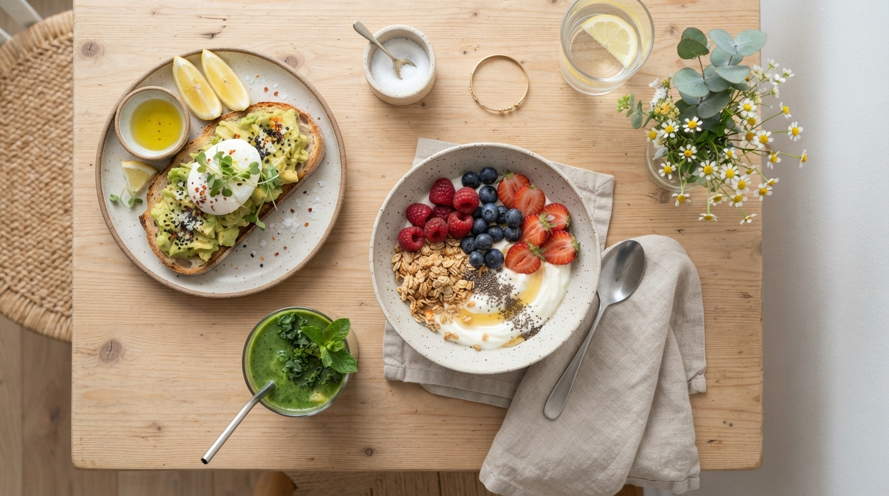
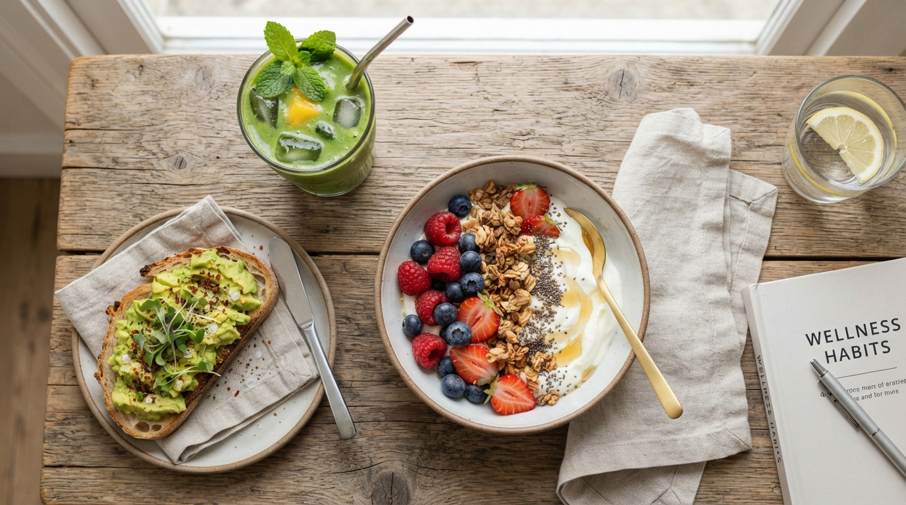
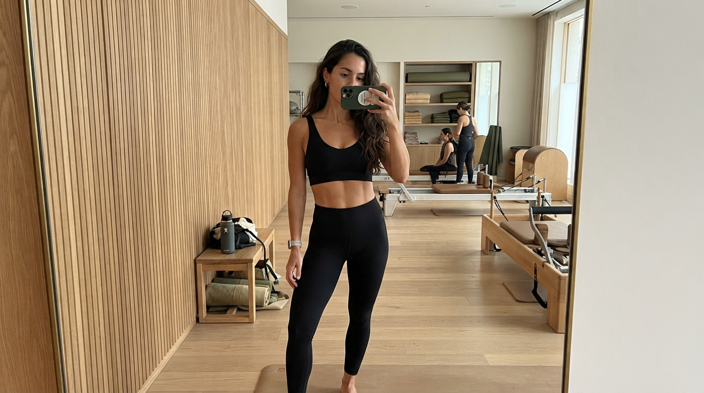
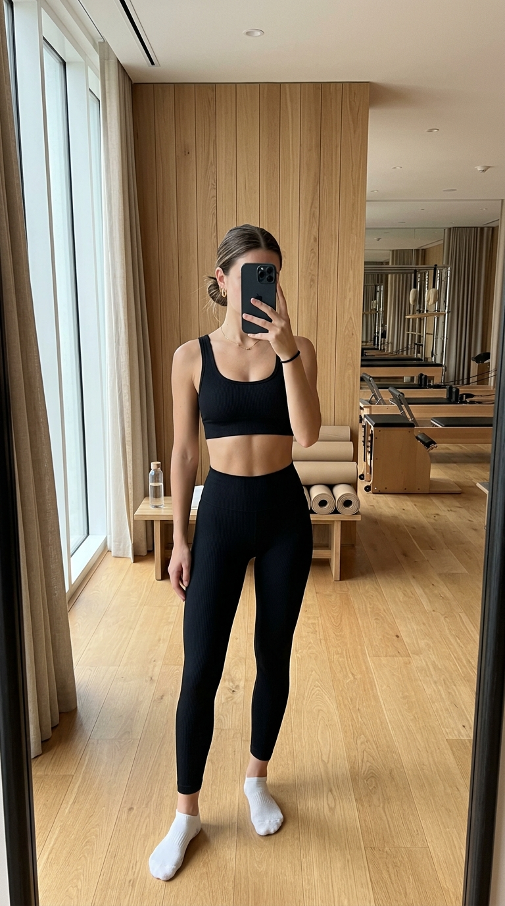
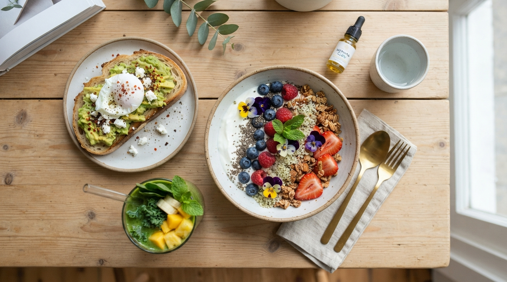
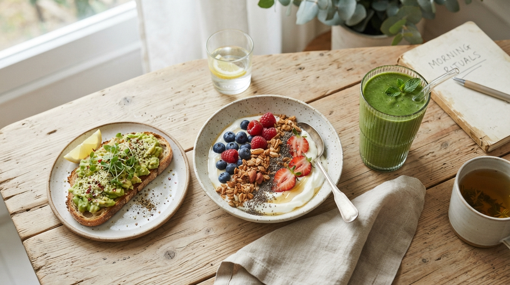
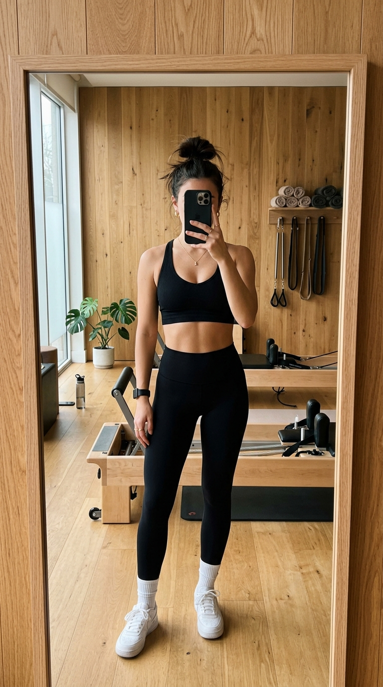

FÁBRICA CARROSSÉIS — THAT GIRL
Google Flow + Slides • 4:5 • 1080×1350 • pronto p/ postar
autópsia do formato — referência que você enviou
12 posts, 4.5K–20K views consistentes. Não é sorte — é formato repetível. Copiamos a estrutura, não o conteúdo. Mesma estética, ganchos rotativos, valor salvável.
DNA extraído
Hook slide 1
POV / me when / "healthy is boring" / quebra de objeção. Máx 2 linhas, 18–22 palavras.
Foto
Corpo inteiro no espelho, pilates studio, madeira + tatame. Look idêntico. Consistência = reconhecimento.
Gatilho de save
Listas, “what i eat”, swaps, receitas. Valor prático que a pessoa guarda.
CTA soft
“>>” ou “to reduce cravings”. Sem vender. Leva pra bio/comentário.
PRÓXIMO PASSO COM FLOW
Gerei 8 imagens base com Google Flow (harbor_seal + narwhal, 720×1280 portrait). Mesma modelo, mesmo estúdio — agora é só trocar hook + recheio e postar diariamente. Abaixo 3 carrosséis prontos em 1080×1350.
carrossel 01 — hook POV • alto save
7 slides • ângulo disciplina → lifestyle • cover + 5 swaps + CTA

POV: you finally decided
to start eating clean
01 — sem sofrimento
É trocar 5 coisas que mantêm sua fissura acesa por versões que te sustentam — e ainda são bonitas no prato.
→ arraste para os 5 swaps

swap 01
pão branco → pão de fermentação + abacate + ovo poché
fibras + gordura boa = saciedade 4h sem pico de açúcar
02
Base: iogurte natural • + berries • chia • granola sem açúcar • fio de mel. Doce, crocante, 18g proteína.

swap 03
suco detox → smoothie verde com gelo
couve + manga + hortelã • fica cremoso, não aguado
04 — regra dos 10 min
Beba água, espere 10 min. Se ainda quiser, coma — mas metade da porção com proteína junto. 80% das fissuras somem.

salve este carrossel
eat better
feel better
look better
comente “LISTA” que te mando os 5 swaps com medidas →
↔ arraste para o lado. Mesma lógica que o vídeo: cover minimalista em cima, valor no meio, CTA soft no fim. 720×1280 do Flow corta perfeito para 1080×1350.
carrossel 02 — what i eat in a day • viral save
7 slides • sem restrição, com estratégia de açúcar no sangue

what i eat in a day
to reduce cravings
no restrictions • 1.850 kcal • high protein
07:30 — café
Iogurte + morango, mirtilo, framboesa, chia, granola + toast integral com abacate e ovo. Café sem açúcar.
pico de glicemia: baixo → sem fome 11h

12:30 — almoço
50% vegetais • 25% proteína • 25% carbo integral. Molho à parte. Coma vegetais primeiro.

15:30 — lanche que segura
iogurte + maçã + 10g pasta de amendoim. Gordura + fibra = cravings off.
19:00 — jantar
Sopa + proteína ou omelete + salada. Nada de “só salada”. Seu corpo precisa de sinal de saciedade.
“the camera eats first” — monte bonito, você come melhor →
o segredo

cravings
não são falta
de força.
são falta de estratégia. salve e teste 7 dias >>
carrossel 03 — pretty food • estética pura
6 slides • o ângulo “the camera eats first” — estética = adesão
pretty food
tastes better >>
the camera eats first
Precisa de comida que te dá vontade de comer. Quando é bonito, você respeita o prato.
regra 01 — cor
3 cores no prato = 3 nutrientes. Vermelho + verde + bege.
Erga com sementes, finalize com ervas. Prato flat = cérebro entende como “dieta”. Prato com volume = “refeição”.
salve este checklist
Rich in life because
I eat like this...
qual prato você quer que eu detalhe? comente 1, 2 ou 3
próximos hooks prontos
Copie a estrutura, adapte a lista. Se quiser, eu gero mais 10 variações agora com Flow + aplico nos templates.
Feito com Google Flow (harbor_seal / narwhal • 720×1280 portrait • validado) + HTML 1080×1350. Fotos geradas estão em campaigns/carrosseis-viral/assets/ — prontas para reuso.